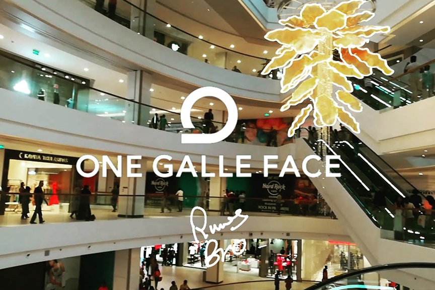
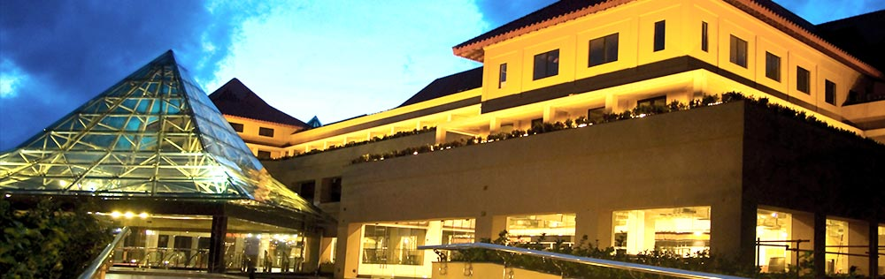
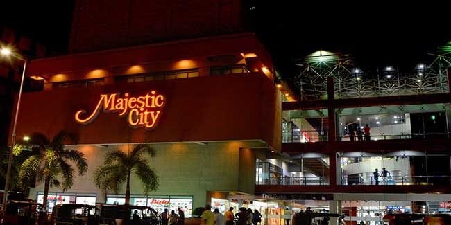
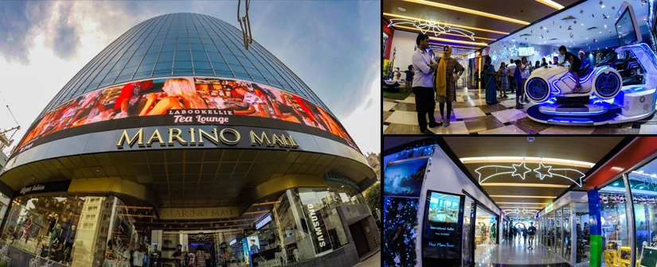
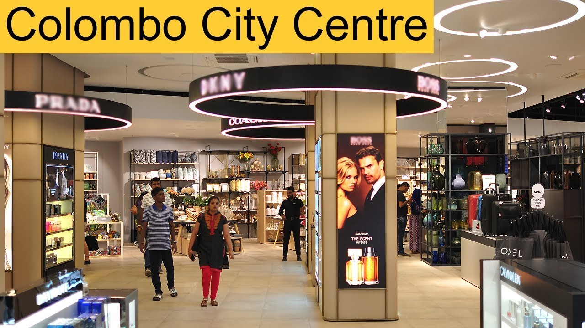
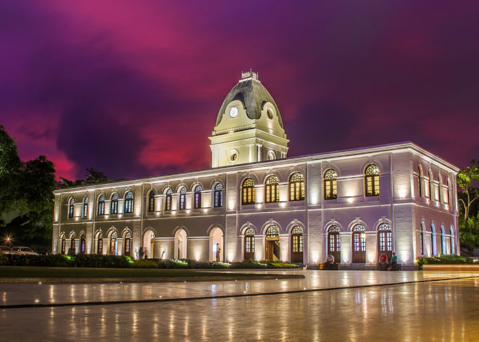

----------Shopping Malls----------

02. one galle face
One Galle Face is a mixed-use complex of buildings currently being built near the Galle Face Green in Colombo, Sri Lanka.

02.kandy city center
Kandy City Centre is a ten-storey commercial and retail complex which is located in Kandy, Sri Lanka near the Temple of Tooth Relic.

03.Majestic city
Majestic City is a seven-storey commercial and shopping complex, located in Bambalapitiya, a suburb of Colombo, near the Bambalapitiya Railway Station.

06.Marino mall
“Marino Mall” feature an array of renowned boutiques & specialty outlets, comprising local & international brands and certainly provides a unique & rewarding shopping experience .

07.colombo city center
Colombo City Centre is a 47-storey mixed use development, comprising a five-storey 3,675 m² retail space, a 164-room hotel and 192 residential apartments.

09.Arcade independence square
The Arcade Independence Square is a shopping complex in Colombo, Sri Lanka.